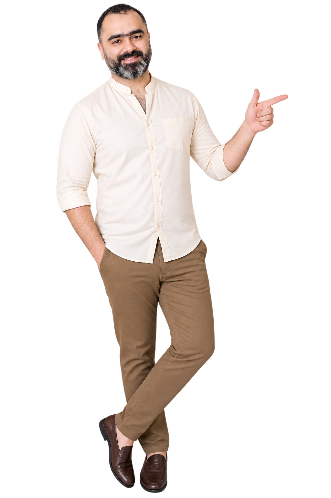

Cambridge O & A Level Business Studies and Accounting Tutor — Malik Teaches
Malik Teaches is an online tutoring service run by Malik Ali for Cambridge O Level (IGCSE) and A Level Business Studies and Accounting, plus PSX (Pakistan Stock Exchange) stock market training. Classes are live online, kept small for individual attention, and include structured notes and past-paper practice. A free trial class can be booked on WhatsApp at wa.me/923016777449.
Cambridge Business, Accounting & Exam Strategy Teacher
5+ Years Teaching · Cambridge O & A Levels
I don't teach students to memorise mark schemes. I teach them to understand the subject, apply it to unfamiliar situations, and write answers that earn marks — the way Cambridge examiners actually reward them.

Results that speak for themselves
2026 Cambridge results — updated as they come in.
0
Total students taught
0
A & B grades
0
Years teaching Cambridge O & A Levels
keep scrolling
Choose Your Path
Business Spotlight
Play Area
How Lessons Work
Understand the starting point
The student's current level, weak spots and target grade.
Close the real gaps
Content gaps and exam-technique gaps, mapped separately.
Concept → application → practice
Concepts, applied to case studies, then exam questions with feedback.
Timed, examiner-style practice
Case studies and past-paper questions marked the way Cambridge marks them.
Measured against the target grade
Regular assessment so progress is visible, not assumed.
Frequently Asked Questions
Do you teach O Levels or IGCSE?
Yes — Malik Teaches offers O Level and IGCSE-equivalent Business Studies, alongside A Level.
Which Cambridge specifications does Malik Ali teach?
Business Studies at O Level and A Level, and Accounting at A Level, for the Cambridge Assessment International Education (CAIE) syllabus.
Are Malik Teaches classes online or in person?
Classes are live and online, so students anywhere in the world can join.
How many students are in a Malik Teaches class?
Classes are kept small so every student gets individual attention.
Does Malik Ali provide notes and past papers?
Yes — students receive structured notes plus regular past-paper and exam-style practice.
What happens in the free trial class at Malik Teaches?
The free trial is a real lesson, so prospective students can see the teaching style before committing. It can be booked on WhatsApp — wa.me/923016777449.
Who is Malik Ali and what is Malik Teaches?
Malik Ali is a Cambridge Business Studies, Accounting, and exam-strategy teacher who runs Malik Teaches, an online tutoring service for Cambridge O Level (IGCSE) and A Level Business Studies and Accounting, plus PSX (Pakistan Stock Exchange) stock market training.
What Students Say
🧭 Cambridge Business
- How companies really work
- Decision-making under pressure
- Leadership instincts
- Marketing, finance & entrepreneurship
- BBA / Business Administration
- Marketing
- Human Resource Management
- International Business
- Supply Chain Management
- Entrepreneurship
- Economics & Public Admin
- Startup Founder
- Management Consultant
- Marketing / Product Manager
- Operations Manager
- Business Analyst
- CEO
- Strategy & business models
- Leadership & negotiation
- Innovation
- Ethics & customer insight
- Healthcare, Tech & Finance
- Government & NGOs
- Manufacturing & Retail
- Consulting
📊 Cambridge Accountancy
- Financial literacy
- Analytical thinking
- Precision under pressure
- Evidence-based decisions
- BS Accounting
- Accounting & Finance
- Finance & Banking
- Commerce
- Economics
- Auditing
Audit, tax & finance.
Public practice & audit.
Corporate finance & advisory.
Investment & asset management.
Corporate & government tax.
- Chartered Accountant / Auditor
- Financial Analyst
- Financial Controller / CFO
- Tax Consultant
- Treasury Manager
- Financial judgement
- Auditing & ethics
- Tax planning
- Risk & compliance
Why Choose Us
Individual Attention
Small class sizes so every student is seen, every question gets answered, and no one gets lost in the crowd.
Personalised Learning Plans
Study plans built around how each student learns and where they're starting from, not a one-size-fits-all syllabus.
Practical Industry Experience
Lessons grounded in real business and accounting practice, so concepts stick because they're seen in action, not just on paper.
Discount on Other Courses
Enrol in more than one course and save, making it easier to build a broader, well-rounded qualification.
Cambridge Teaching Experience
Years spent teaching Cambridge O & A Level Business and Accounts, with a firm grip on exactly what examiners look for.
Friendly & Approachable
A relaxed, encouraging classroom where questions are always welcome and mistakes are treated as part of learning.
Flexible Online Classes
Join live from anywhere, fitting quality Cambridge tuition around school, family, and other commitments.
🎓 Global Scholarships
🇮🇹 Italy
🇪🇸 Spain
🇩🇪 Germany
🇫🇷 France
🇳🇱 Netherlands
🇨🇭 Switzerland
🇦🇹 Austria
Nordics
Small States
Caucasus & Central Asia
National Scholarship Programs
National Programs
US Universities
Canada
🇸🇦 Saudi Arabia
🇰🇼 Kuwait
🇴🇲 Oman
🇧🇭 Bahrain
Most Gulf government scholarships prioritise GCC nationals or residents — always check eligibility on the official page before applying.
Country & Foundation Programs
Country Portals
Aggregators, Databases & News Sites
Reach me anywhere
Explore More
How lessons work, common questions, what students say, business spotlight and the play area — all packed in the bag. Tap it to open.
tap the bag to open
the coolest teacher
— Studentfunny but yet strict, the best class experience
— Studentfocused and dedicated
— Studentreally good mentor
— Studentluv u sir g
— Studentmade my kid fall in love with code, and my kid doesn't study easily — that alone means you're an amazing teacher
— Parentgood methods make students work and study hard
— Student